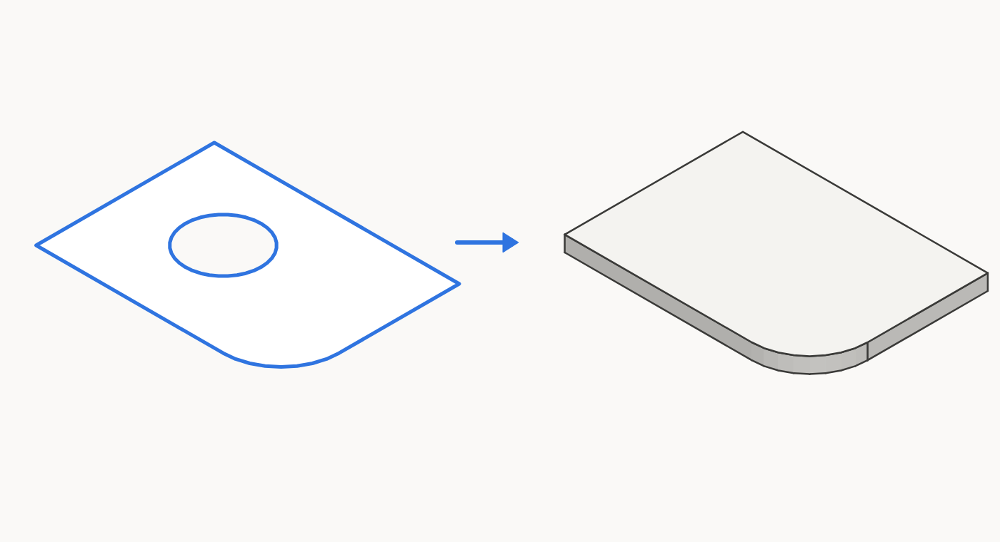
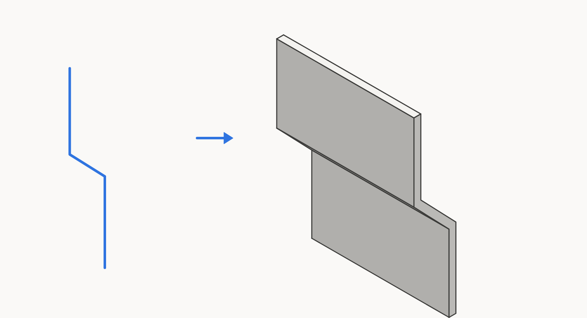
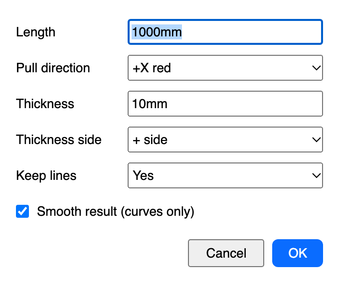
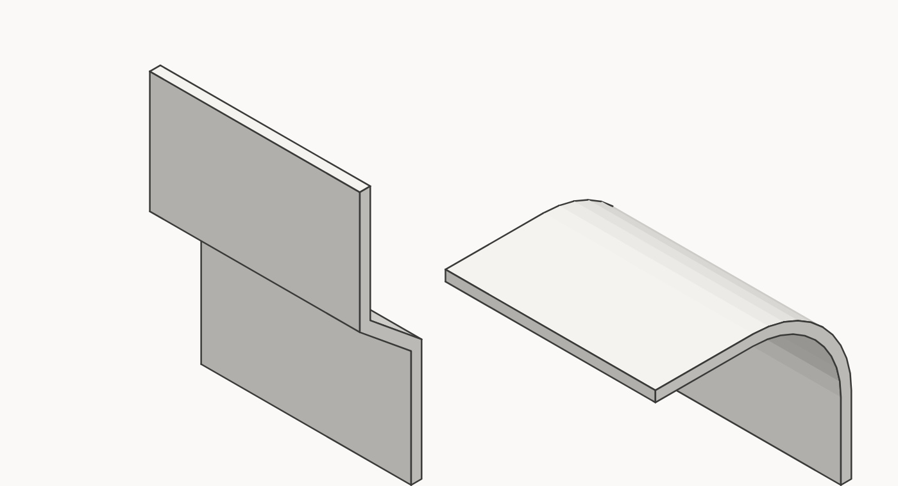
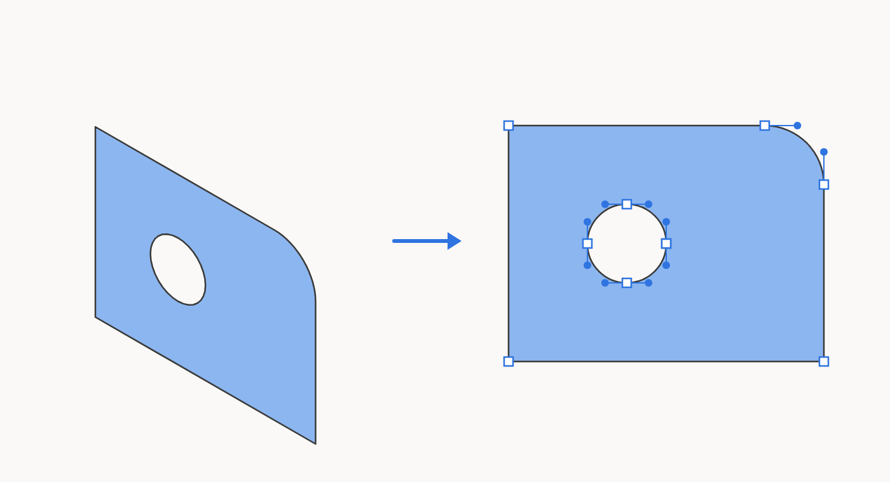

Solid Panel
Turn a flat shape or a few lines into a solid panel.
Ubah bentuk datar atau beberapa garis menjadi panel solid.
Start here: for first-time usersMulai dari nol
New to SketchUp extensions? This part explains the basics in plain words. If you already know them, skip to step 1.
Baru pertama kali memakai extension SketchUp? Bagian ini menjelaskan dasar-dasarnya dengan bahasa sehari-hari. Kalau sudah paham, langsung ke langkah 1.
What you are installingApa yang Anda pasang
An extension is a small add-on that gives SketchUp a new tool. It comes as one file ending in .rbz. You do not open or unzip that file yourself; SketchUp installs it for you. Solid Panel is free.
Extension adalah program tambahan kecil yang menambah alat baru di SketchUp. Bentuknya satu file berakhiran .rbz. File itu tidak perlu dibuka atau diekstrak sendiri, karena SketchUp yang memasangnya. Solid Panel gratis.
Install it, step by stepCara memasang, langkah demi langkah
- On the main page, press Download. The file usually lands in your Downloads folder.
- Open SketchUp. In the menu bar at the top, choose Extensions › Extension Manager.
- Press Install Extension…, find the
.rbzfile in your Downloads folder, and open it. - If SketchUp asks whether to install, choose Yes.
- Close SketchUp and open it again.
- Look in the Extensions menu. The name Solid Panel should be there. That means it worked.
- Di halaman utama, tekan Unduh. File biasanya masuk ke folder Downloads (Unduhan).
- Buka SketchUp. Di menu bar paling atas, pilih Extensions › Extension Manager.
- Tekan Install Extension…, cari file
.rbztadi di folder Downloads, lalu buka. - Kalau SketchUp bertanya apakah mau memasang, pilih Yes.
- Tutup SketchUp, lalu buka lagi.
- Lihat menu Extensions. Nama Solid Panel akan ada di sana. Artinya pemasangan berhasil.
Words you will meetIstilah yang akan Anda temui
| WordIstilah | What it meansArtinya |
|---|---|
| Face | A flat surface of a model, like one side of a box. Click it once to select it.Permukaan datar pada model, seperti satu sisi kotak. Klik sekali pada permukaannya untuk memilihnya. |
| Group / Component | Faces and edges tied together as one object. To make one: select everything, right-click, then Make Group. Double-click it to go inside and change its contents, click an empty area to leave.Kumpulan face dan edge yang diikat menjadi satu benda. Untuk membuatnya: pilih semuanya, klik kanan, lalu Make Group. Klik dua kali benda itu untuk masuk dan mengubah isinya, klik di area kosong untuk keluar. |
| Toolbar | A row of icon buttons. If you cannot see it, open View › Toolbars and tick the extension name.Deretan tombol bergambar. Jika tidak terlihat, buka View › Toolbars dan centang nama extension-nya. |
| Undo | Cancels the last step. Press Cmd+Z on Mac or Ctrl+Z on Windows. Nothing is broken for good, so feel free to try.Membatalkan langkah terakhir. Tekan Cmd+Z di Mac atau Ctrl+Z di Windows. Tidak ada yang rusak permanen, jadi coba saja. |
| Dialog | A small window with fields that appears after you run a command. Fill it in, then press OK.Jendela kecil berisi isian yang muncul setelah Anda menjalankan perintah. Isi, lalu tekan OK. |
Your first try (about 5 minutes)Percobaan pertama (sekitar 5 menit)
- Press R for the Rectangle tool, then click two points to draw a rectangle.
- Press Space to return to the Select tool, then click once inside the rectangle until it shows blue dots.
- Choose Extensions › Solid Panel › Solid Panel…
- In Thickness, type
10mm. Leave the other fields as they are and press OK. - You get a new group 10 mm thick. Rotate the view with the Orbit tool (hold the middle mouse button and drag) to see the thickness. Not right? Press Undo.
- Tekan R untuk alat Rectangle, lalu klik dua titik di bidang gambar untuk membuat persegi panjang.
- Tekan Spasi untuk kembali ke alat Select, lalu klik sekali di dalam persegi panjang itu sampai berbintik biru.
- Pilih Extensions › Solid Panel › Solid Panel…
- Pada isian Thickness, ketik
10mm. Isian lain biarkan apa adanya, lalu tekan OK. - Anda mendapat grup baru yang tebalnya 10 mm. Putar pandangan dengan alat Orbit (tahan tombol tengah mouse sambil menggeser) untuk melihat tebalnya. Kurang cocok? Tekan Undo.
10mm or 2cm. A bare number uses the unit of your model.Tips Saat isian meminta panjang, ketik angkanya beserta satuan, misalnya 10mm atau 2cm. Angka tanpa satuan memakai satuan model Anda.If something does not show upKalau ada yang tidak muncul
| ProblemMasalah | What to doYang bisa dicoba |
|---|---|
| The menu is not in Extensions.Menunya tidak ada di Extensions. | Close and reopen SketchUp. Then open Extensions › Extension Manager, go to the Manage tab and make sure Solid Panel is switched on.Tutup lalu buka lagi SketchUp. Setelah itu buka Extensions › Extension Manager, masuk ke tab Manage, dan pastikan Solid Panel dalam keadaan aktif. |
| I cannot see the toolbar.Toolbar tidak terlihat. | Open View › Toolbars and tick Solid Panel.Buka View › Toolbars lalu centang Solid Panel. |
| I press a button and nothing happens.Tombol ditekan tetapi tidak terjadi apa-apa. | Usually nothing is selected yet. Click the object first. Selected things turn blue.Biasanya belum ada yang dipilih. Klik objeknya dulu. Yang terpilih berwarna biru. |
| The result is not what I wanted.Hasilnya tidak sesuai harapan. | Press Undo once and try again with other numbers.Tekan Undo satu kali, lalu coba lagi dengan angka lain. |
Still stuck? Email andidewanto@gmail.com with your SketchUp version and a short description.
Masih bingung? Kirim email ke andidewanto@gmail.com dengan versi SketchUp Anda dan penjelasan singkat.
1. Install1. Instalasi
- Download the
.rbzfrom the main page. - SketchUp: Extensions › Extension Manager › Install Extension… and choose the file.
- Find it under Extensions › Solid Panel › Solid Panel…, or show the toolbar in View › Toolbars.
- Unduh
.rbzdari halaman utama. - SketchUp: Extensions › Extension Manager › Install Extension… lalu pilih filenya.
- Temukan di Extensions › Solid Panel › Solid Panel…, atau tampilkan toolbar di View › Toolbars.
2. Panel from a flat shape2. Panel dari bentuk datar
Give a flat shape real thickness.
Beri ketebalan pada bentuk datar.

- Select a face, or a group or component whose faces all lie in one plane. You can select several.
- Choose Extensions › Solid Panel › Solid Panel…
- Thickness: type a value, for example
10mm. - Direction: Front builds toward the front of the face, Back toward the back, Centered half each way.
- Keep original:
Yesleaves the shape in place,Noremoves it. - Smooth result: leave it on to smooth curves, or turn it off to keep every edge hard.
- Press OK.
- Pilih face, atau grup atau komponen yang semua face-nya sebidang. Bisa memilih beberapa.
- Pilih Extensions › Solid Panel › Solid Panel…
- Thickness: ketik nilainya, misalnya
10mm. - Direction: Front ke arah depan face, Back ke arah belakang, Centered setengah ke tiap arah.
- Keep original:
Yesmembiarkan bentuknya,Nomenghapusnya. - Smooth result: biarkan aktif untuk menghaluskan lengkungan, atau matikan agar semua edge tetap keras.
- Tekan OK.
You get a new group in the same context, named after your group or component, such as Shelf panel, or Shape panel for a loose face. It takes the material of the first face.
Anda mendapat grup baru dalam konteks yang sama, dinamai sesuai grup atau komponen Anda, misalnya Shelf panel, atau Shape panel untuk face lepas. Materialnya mengikuti face pertama.
3. Panel from lines3. Panel dari garis
Draw a profile with lines, then let Solid Panel do the offset and the Push/Pull.
Gambar profil dengan garis, lalu biarkan Solid Panel melakukan offset dan Push/Pull.


- Select connected lines only, with no flat shape in the selection. They can be open or closed, and arcs are fine. All lines must lie in one flat plane.
- Choose Extensions › Solid Panel › Solid Panel…
- Length: how far to pull the profile, for example
1000mm. - Pull direction: the list shows only directions square to your lines. Lines on a sloped plane get Plane normal + and Plane normal -.
- Thickness: for example
10mm. - Thickness side: + side or - side puts the thickness on one side of the line, Centered puts half on each.
- Keep lines:
Yesleaves the lines in place,Noremoves them. - Press OK.
- Pilih garis yang tersambung saja, tanpa bentuk datar dalam pilihan. Boleh terbuka atau tertutup, dan arc juga bisa. Semua garis harus berada di satu bidang datar.
- Pilih Extensions › Solid Panel › Solid Panel…
- Length: seberapa jauh profil ditarik, misalnya
1000mm. - Pull direction: daftar hanya menampilkan arah yang tegak lurus garis Anda. Garis di bidang miring mendapat Plane normal + dan Plane normal -.
- Thickness: misalnya
10mm. - Thickness side: + side atau - side menaruh ketebalan di satu sisi garis, Centered setengah di tiap sisi.
- Keep lines:
Yesmembiarkan garisnya,Nomenghapusnya. - Tekan OK.
4. Sharp bends and curves4. Tekukan dan lengkungan

With Smooth result on, a corner is smoothed only if it turns less than 30° and belongs to a curve: a real arc or curve, or three or more small turns in a row in the same direction, as in an exploded arc. Plain bends stay sharp at any angle. With it off, every edge stays hard.
Saat Smooth result aktif, sudut dihaluskan hanya jika beloknya kurang dari 30° dan termasuk lengkungan: arc atau curve sungguhan, atau tiga belokan kecil atau lebih berurutan ke arah yang sama, seperti arc yang di-explode. Tekukan biasa tetap tajam berapa pun sudutnya. Jika dimatikan, semua edge tetap keras.
5. Copy as Vector5. Copy as Vector
Bring the shape of a face into Illustrator at true size.
Bawa bentuk face ke Illustrator dengan ukuran sebenarnya.

- Select one or more faces. To use faces inside a group, double-click into the group first.
- Right-click and choose Copy as Vector. It is also in Extensions › Solid Panel › Copy as Vector and on the toolbar.
- In Illustrator, press Cmd+V.
- Pilih satu atau beberapa face. Untuk face di dalam grup, klik dua kali grupnya dulu.
- Klik kanan lalu pilih Copy as Vector. Menu ini juga ada di Extensions › Solid Panel › Copy as Vector dan di toolbar.
- Di Illustrator, tekan Cmd+V.
- Size: 1:1 in mm. Very large selections, over about 5 m, are scaled down to fit, and the message tells you the scale.
- View: each face as seen from its front. A face in a vertical wall appears as you would see it standing in front of it.
- Curves and holes: SketchUp arcs and circles become real curves, and holes stay holes.
- Colour: the face's material colour as the fill, with no outline. A face with no material uses the model's default face colour (white unless your style changes it).
- Several faces: faces in one plane keep their positions. Faces in other planes are placed side by side, 20 mm apart.
- Ukuran: 1:1 dalam mm. Pilihan yang sangat besar, lebih dari sekitar 5 m, diperkecil agar muat, dan pesannya menyebutkan skalanya.
- Tampak: tiap face dilihat dari depannya. Face pada dinding tegak tampil seperti dilihat dari depan dinding itu.
- Kurva dan lubang: arc dan lingkaran SketchUp menjadi kurva sungguhan, dan lubang tetap lubang.
- Warna: warna material face sebagai isi, tanpa garis tepi. Face tanpa material memakai warna face default model (putih, kecuali style-nya diubah).
- Beberapa face: face dalam satu bidang tetap di posisinya. Face di bidang lain diletakkan berjajar dengan jarak 20 mm.
6. Uninstall6. Uninstall
Extensions › Extension Manager › select Solid Panel › Uninstall.
Extensions › Extension Manager › pilih Solid Panel › Uninstall.
Buy me a coffee for IDR 10,000. That's less than a dollar. The plugin is free. The coffee is optional. My wife insisted on this button.